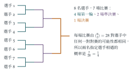

STEP II Specimen paper，第 16 題
繼續之前，請先閱讀題目（原題為英文）。題目載於 STEP Support Programme 的題目資料庫： step.maths.org/questions/spec-s2-q16
引子
溫布頓網球錦標賽（Wimbledon）有 \(128\) 名選手參加抽籤。隨機選出其中兩人：他們在賽事中某個階段相遇的機會有多大？你也許會嘗試把每一輪相遇的概率（probability）加起來，而每一項都是「雙方晉級」與「被抽在一起」這些機會的乘積。這樣做是可行的，但有一個好得多的方法。數一數比賽的場數：每場比賽都由一對選手對賽，而比賽恰好有 \(127\) 場。根據對稱性（symmetry），每一對選手成為其中任何一場的對賽雙方的可能性都相同。因此所求的機會就是 \(127\) 除以選手配對的總數。
這道題是「數對了東西，概率問題便迎刃而解」的絕佳例子。答案 \(\frac{1}{2^{n-1}}\) 只需一行便可得出。
動筆之前
有 \(2^n\) 名選手的淘汰賽（knockout tournament）共要進行多少場比賽？（每場比賽淘汰一名選手。）
每場比賽恰好淘汰一名選手，而除了一人之外所有選手都被淘汰，所以共有 \(2^n - 1\) 場比賽。
逐步解題
階段 1 第一輪
把選出的兩名選手稱為 \(X\) 和 \(Y\)。在第一輪，\(X\) 的對手是其餘 \(2^n - 1\) 名選手中任何一人的可能性都相同，所以 \[\mathrm{P}(\text{相遇於輪次 } 1) = \frac{1}{2^n - 1}.\]
階段 2 關鍵的對稱性
每一輪的抽籤都是隨機的，而每場比賽都相當於擲一次公平的硬幣。這個過程對待某一對選手的方式，會否與對待另一對有所不同？
不會。由於抽籤是隨機的，而且每場比賽的勝負機會都是 \(50\)–\(50\)，把選手重新標號並不會改變任何概率。所以任何一場指定的比賽（例如決賽）由 \(\binom{2^n}{2}\) 對選手中任何一對對賽的可能性都相同。
階段 3 決賽
決賽是一場特定的比賽，所以它由 \(X\) 和 \(Y\) 對賽的概率是 \[\frac{1}{\binom{2^n}{2}} = \frac{2}{2^n(2^n - 1)}.\] （驗算：兩人都必須打進決賽，這需要他們分處不同的半區，並且各自勝出 \(n - 1\) 場比賽。）
階段 4 在任何階段
\(X\) 和 \(Y\) 最多只能相遇一次。這一點怎樣讓你可以把各場比賽的概率相加？
設 \(I_m\) 在第 \(m\) 場比賽由 \(X\) 和 \(Y\) 對賽時取值 \(1\)。在 \(2^n - 1\) 場比賽中，每一場都有 \(\mathrm{P}(I_m = 1) = \binom{2^n}{2}^{-1}\)，而這些事件是互斥（mutually exclusive）的（他們不可能相遇兩次），所以 \[\mathrm{P}(\text{相遇}) = \frac{2^n - 1}{\binom{2^n}{2}} = \frac{2(2^n - 1)}{2^n(2^n - 1)} = \frac{1}{2^{n-1}}. \qed\] 以溫布頓為例，\(n = 7\)，兩名指定選手相遇的概率是 \(\frac{1}{64}\)。作為驗算，在 \(2^n - 1\) 場比賽中，第一輪佔了 \(2^{n-1}\) 場，由此得出 \(\frac{2^{n-1}}{\binom{2^n}{2}} = \frac{1}{2^n - 1}\)，與第 1 階段的結果一致。

回顧
數比賽的場數。比賽的場數 \(2^n - 1\) 是關鍵的事實。
各對選手之間的對稱性。每一對選手成為任何一場指定比賽的對賽雙方的可能性都相同。
對各場比賽的線性性質。由於兩名選手最多相遇一次，相遇的概率就是相遇次數的期望值，也就是對各場比賽求和。
背後的數學
期望次數
第 4 階段的論證其實是一個期望值（expectation）的計算：\(X\) 和 \(Y\) 相遇的次數是若干個指示變量（indicator）之和，每場比賽對應一個；而它的期望值（由於它只取 \(0\) 或 \(1\)，所以等於相遇的概率）就是各個指示變量的期望值之和。這就是期望值的線性性質（linearity of expectation），在 第 9.11 節 和 第 12.4 節 中都曾用到。它最大的好處是完全不必理會各輪之間錯綜複雜的相依關係。
設有種子的賽事
現實中的賽事設有種子（seeded）：最強的選手會被編排在適當的位置，使他們要到後段輪次才可能相遇。而且現實中的比賽也不是 \(50\)–\(50\) 的。這兩點都破壞了對稱性，於是計算兩名指定選手相遇的機會便成了一項貨真價實的運算。為體育運動建立模型的統計學家正是運用這類計算來預測賽事，當中每場比賽的概率都是根據選手的評分估計出來的。對稱的情況則是一條基線，用來衡量各種現實因素的影響。
思維技巧
只要選對了對象，概率往往可以用（有利對象的數目）\(\div\)（等可能對象的數目）求得。在這裏，對象就是比賽和選手配對。
選擇數甚麼，正是組合概率（combinatorial probability）的藝術。在大學裏，同一個想法會以算兩次（double counting）的形式出現（第 7.9 節），也會出現在概率方法（probabilistic method）之中：在那裏，某種結構的期望數目可以用來證明它存在。
延伸練習
逐輪計算。直接證明 \(X\) 和 \(Y\) 在第 \(k\) 輪相遇的概率是 \(\frac{2^{n-k}}{\binom{2^n}{2}}\)，並驗證這些概率加起來等於 \(\frac{1}{2^{n-1}}\)。
固定的賽程表。假如賽程表改為預先固定（如圖所示），但所有選手都被隨機編入其中，答案會否改變？
一名強手。假設選手 \(X\) 每場比賽都勝出。現在 \(X\) 與 \(Y\) 相遇的概率是多少？
聯賽。在一個有 \(2n\) 支球隊的聯賽中，每兩隊都對賽一次，共有多少場比賽？相應的「相遇概率」是甚麼？
延伸閱讀
Frederick Mosteller, Fifty Challenging Problems in Probability（Dover），書中收錄了有關淘汰賽的問題。
David Spiegelhalter, The Art of Statistics（Pelican），講述建立模型與預測。
Joseph Blitzstein & Jessica Hwang, Introduction to Probability（CRC Press；可於網上免費閱讀），講述指示變量與對稱性。